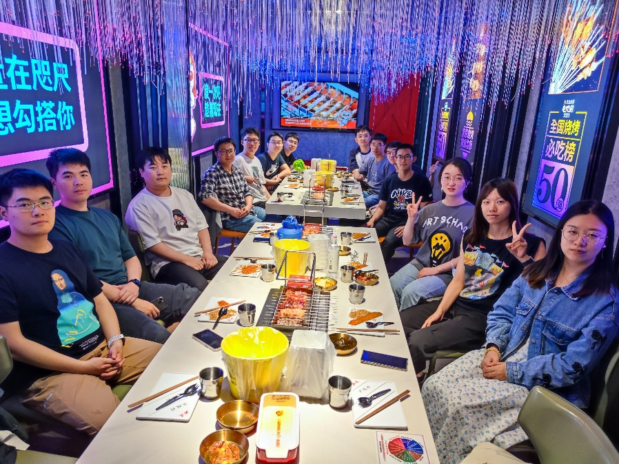

01从真实城市问题出发，做能落地的计算研究
About LUCK
互联你我，
连接知识
我们关心的不只是模型的分数，更是它如何理解复杂世界、服务真实的人。
课题组由金嘉晖副教授管理，长期开展城市计算、知识图谱、大数据处理系统与智能应用研究。我们鼓励从问题出发，把理论洞察转化为可靠的系统和开放的工具。
4核心研究方向
20+在读成员
100%面向真实问题


LUCK News
最近发生
论文
级联流行度预测研究入选 IJCAI 2026
孟一凡、金嘉晖等提出 CasUGC，将用户评论演化与级联动态进行对齐。
论文
长时序时空预测研究入选 KDD 2026
孙锡刚、金嘉晖等提出频率条件化方法，建模长期预测中的空间动态。
论文
多模态兴趣点推荐研究入选 ACM MM 2025
黄思源、金嘉晖等提出 IM-POI，连接 ID 表征与多模态信息。
Selected work
研究成果
People
一起研究，
一起成长
我们重视每个人的成长节奏，也重视一起把事情做好的成就感。

导师
金嘉晖副教授 · 副院长 · 博士生导师
博士生
孙锡刚 白文超 朱浩嘉郭振东 孟一凡
硕士生
陈浩宇 郭子扬 洪逸 邱汉宸林欣 黄思源 阚东 马然
毕业生
安祺 徐志鹏 宋一凡 吴碧伟苗子佳 唐俊 朱晓璇等
Join LUCK
下一段研究，
等你一起写。
本科生、硕士生、博士生和对研究充满热情的伙伴，都欢迎联系我们。这里有真实的问题、充分的设备和认真交流的同伴。